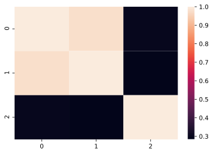

統計量¶
平均¶
平均(mean, average)は、測定した数値の合計を、その数値の個数で割ったもの。
と定義される。平均値を表す記号として\overline{x}や\muがよく使用される。
Pythonではstatisticsライブラリを使用すると簡単に求めることができる。
1 2 3 4 | |
1 | |
中央値¶
中央値(median)とはデータを小さい方から順に並べて中央に位置するデータを示します。もしデータ数が偶数であれば真ん中の平均値となる。
pythonでは下記のように求まる。
1 2 3 4 | |
1 | |
分散¶
分散(variance)は\sigma^2で表現され、
と定義される。各データの値から、それらの平均\overline{x}を引き二乗した値の平均値となります。分散は名前の通り、平均値からの離れ具合を数値化したものである。平均値からの離れ具合であれば、平均値からの距離の平均とすれば良いのであるが計算を簡単にするために二乗しているとイメージすれば良い。
分散にはもう一つ定義されています。それが
となります。見てわかるように初めの定義式の\frac{1}{N}が\frac{1}{N-1}に変わっています。前者を標本分散(sample variance)といい、後者を不偏分散(unbiased variance)という。
標本分散を求めるpythonプログラム
1 2 3 4 | |
1 | |
不偏分散を求めます。
1 | |
1 | |
標準偏差¶
標準偏差は分散\sigma^2の平方根\sigmaと定義されます。分散の次元は元の標本の二乗になっていたので、平方根をとって元の次元としたものです。
標準偏差を求めるpythonプログラム
1 2 3 4 | |
1 | |
1 | |
1 | |
相関係数¶
相関係数(correlation coefficient)は2種類のデータの関連の度合いを測るための数値で、
と定義されます。相関係数は通常rで表され、常に-1 \leqq r \leqq 1となる。rの値が正の場合は正の相関があるといい、負のときは負の相関があるという。
rの絶対値が大きいほど相関を強いことを示すが、「いくつ以上であれば相関があると言える」と判断できる閾値は通常、ターゲット毎に異なるので一般化することは出来ない。無相関検定を実施することで相関の有無を判断する。
pythonでは色々なライブラリを使う方法があるが何通りか紹介する。
1 2 3 4 5 6 | |
1 2 | |
1 2 3 4 5 6 7 8 | |
| 0 | 1 | 2 | |
|---|---|---|---|
| 0 | 1.000000 | 0.975751 | 0.296301 |
| 1 | 0.975751 | 1.000000 | 0.283135 |
| 2 | 0.296301 | 0.283135 | 1.000000 |
1 2 | |
1 | |
